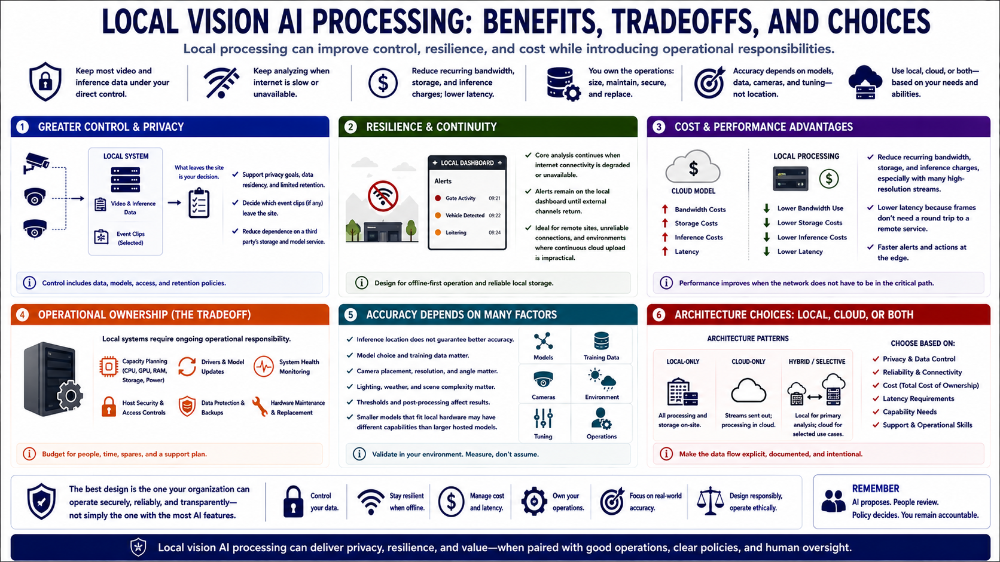

Why Run Vision AI Locally?
Connecting to LMS... Progress: in progress

Narration
Local processing can keep most video and inference data under the operator's direct control. This can support privacy goals, data residency, limited retention, and clearer decisions about which event clips leave the site. It also reduces dependence on a third party's storage and model service.
A local system can continue core analysis when internet connectivity is degraded or unavailable. Alerts may remain on the local dashboard until an external channel returns. This is useful for remote facilities, unreliable connections, and environments where continuous cloud upload is impractical.
Local workflows may reduce recurring bandwidth, storage, and inference charges, especially when many high-resolution streams are involved. They can also provide low-latency event handling because frames do not need a round trip to a remote service.
The tradeoff is operational ownership. Local hardware has finite CPU, GPU, memory, power, and storage. The organization must size capacity, maintain drivers and models, monitor health, protect the host, and replace failed components.
Accuracy does not improve merely because inference is local. Model choice, training data, camera placement, weather, lighting, and threshold tuning still determine performance. Smaller models that fit the hardware may have different capabilities than larger hosted services.
Local and cloud processing can be combined selectively, but the data flow should be explicit. Choose architecture by privacy, reliability, cost, latency, capability, and support requirements. The best design is the one the organization can operate securely and transparently, not simply the one with the most AI features.